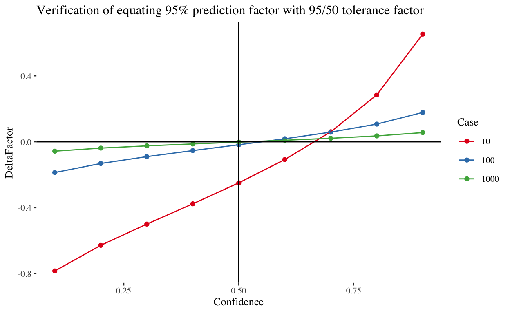
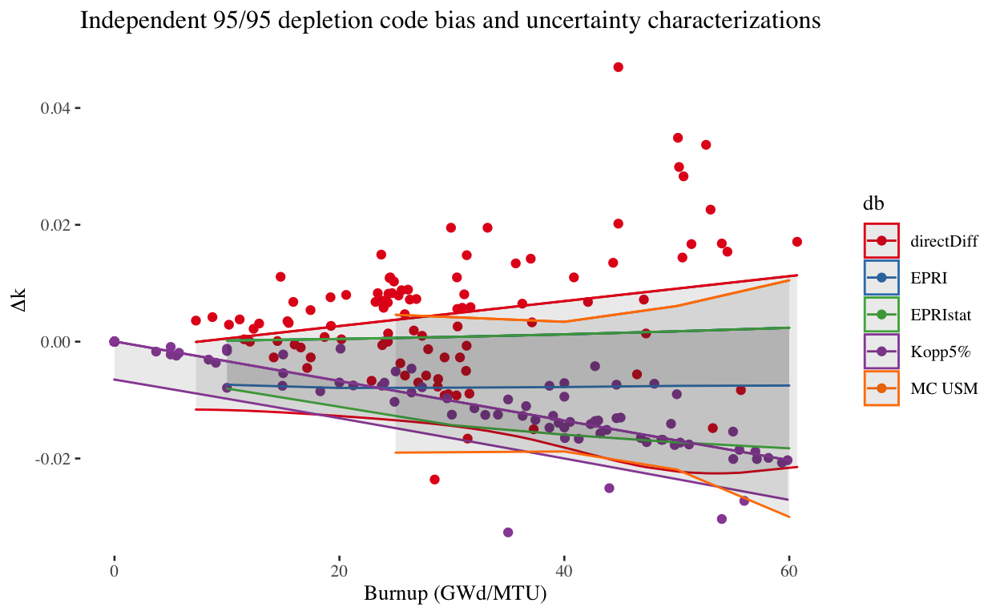
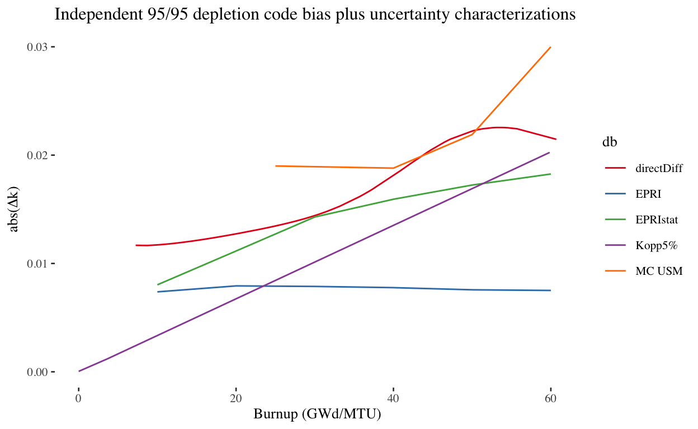

In this analysis, 5 depletion code validation approaches are compared side-by-side. Each approach is briefly described, the statistical approaches used in this analysis are explained, and finally the resultant depletion uncertainty versus burnup characterizations are compared visually and discussed. Finally, some conclusions are made with implications for future spent fuel pool (SFP) criticality safety analyses (CSAs) that will be submitted to the NRC for review and approval.
Since approximately 1998, NRC commercial power plant licensees have adopted the “Kopp 5%” approach in lieu of a formal depletion code validation. This has been documented in several recently issued SFP CSA safety evaluation reports and is explained further in NRC internal guidance document DSS-ISG-2010-01. The results of this approach are practically regarded as a “depletion uncertainty” in SFP CSAs submitted to the NRC to satisfy 10 CFR 50.68(b)(4) requirements. Consequently, for simplicity, the uncertainty arising from (or attributed to) the use of depletion codes to predict spent fuel isotopics, in terms of reactivity, will be reffered to as “depletion uncertainty” for the remainder of this report.
Fundamentally, the Kopp 5% approach is based on reactor design code uncertainties (e.g. lattice physics depletion codes – or depletion codes – in conjunction with reactor simulator codes). All NRC power plant licensees are required to use only reactor design codes that have been specifically approved for use by the NRC at the respective licensee facility. It has been observed that implementation of these codes for reactor core and cycle design generally result in various relevant figures of merit well within 5% of measured values irrespective of reactor core design code type and licensee.
Consequently, most commercially licensed light water reactor licensees use the Kopp 5% approach since they already use previously licensed reactor design codes to perform depletion calculations in support of other design basis calculations (e.g. core design and transient analyses).
The major pitfall with this method is that it is not a generally applicable method and it is ultimately based on the observation that depletion codes in conjunction with reactor simulator codes can generally predict certain measured values within 5%. Because these predictions are generally within 5% of measured values by a large margin, this approach has been considered to be conservative. However, the relationship between the isotopic prediction accuracy of the depletion and simulator codes has not been formally tied to the Kopp 5% approach in terms of reactivity. Rather, it is implied, for example, that a relative assembly power prediction accuracy bounded by 5% directly translates into SFP reactivity prediction accuracy within 5%. The implication that this is true is the engineering judgment being made. The main goal of this study is to attempt to qualify this engineering judgment based on comparison to formal validation approaches.
The Monte Carlo uncertainty sampling method (MC USM) is described in detail in NUREG/CR-6811, “Strategies for Application of Isotopic Uncertainties in Burnup Credit” (Gauld 2003) and is implemented for a typical SFP storage configuration in NUREG/CR-7108, “An Approach for Validating Actinide and Fission Product Burnup Credit Criticality Safety Analyses - Isotopic Composition Predictions” (Radulescu et al. 2012). The intent of the NUREG/CR-7108 research effort was to enable the creation of guidance that would allow NRC licensees to perform formal, technically-justified, depletion code validation analyses.
NUREG/CR-7108 states, “[The MC USM] is used to represent the effects of nuclide concentration uncertainty on k-effective values by sampling isotopic concentrations from uncertainty distributions developed from experimental data.” Essentially, distributions of measured-to-calculated (M/C) isotopic concentrations are formed for 28 nuclides1 – these are important major and minor actinides and fission products. The measurements are derived from radiochemical assays (RCA) and samples are available at various burnups between 7 and 61 gigawatt-days per metric ton uranium (GWd/MTU). The RCA data is split up into a total of three burnup bins that have been defined using trending analysis. Burnup-dependent M/C distributions are formed for each of the major and minor actinides while the fission product data is lumped into a single bin over the range of RCA data burnups.
As part of the MC USM approach, depletion calculations are performed, to the various burnups of interest, using the TRITON two-dimensional (2-D) depletion code with nuclear cross-section data from Version 7.0 of the Evaluated Nuclear Data File maintained by Brookhaven National Laboratory (ENDF/B-VII.0); TRITON is part of the SCALE, Version 6.1 computer code package (SCALE 6.1) (ORNL 2011).2 Isotopics from these depletion calculations are used in subsequent criticality calculations and these criticality calculations serve as the reference calculations that determine the burnup-dependent reference k-effective values for the analyzed SFP configuration.
Between 250-500 criticality calculations are then performed for each chosen burnup point used in establishing the depletion uncertainty versus burnup relationship. Each criticality calculation samples all 28 of the pre-defined burnup-dependent M/C distributions. NUREG/CR-7108 uses 7-9 burnup points to establish the depletion uncertainty versus burnup relationship, thus somewhere between 1750 and 4500 criticality calculations are needed with the MC USM approach.
Estimates of bias can then be formed based on calculating the difference between the reference k-effective calculations (i.e. without using any sampled M/C values to replace as-calculated values) and the simple average of the 250-500 criticality calculation k-effective values based on sampling the M/C distributions. Application of a statistical tolerance factor then allows for determination of uncertainty at a 95% probability, 95% confidence (95/95) level. More specifically, this is the uncertainty that would cover 95% of all k-effective values possible for the given configuration with 95% confidence based on the data available.
It was seen that a positive bias was determined over all burnup indicating that the SCALE 6.1 TRITON depletion code used in the analysis tends to overpredict spent fuel reactivity; these positive biases are not typically credited in SFP CSAs. Consequently, only the bias uncertainty remains and is characterized as the 95/95 depletion uncertainty.
The major pitfall with this method is that the experimental procedure is associated with relatively high RCA measurement uncertainties and operational history uncertainties that likely compound with increasing burnup.3 These high experimental procedure uncertainties manifest as statistical noise. This noise is separate from the true variance that is sought, which is associated solely with the depletion code. Consequently, estimates of 95/95 depletion uncertainty from the MC USM will be conservatively inflated.
The direct difference approach, also described in detail in NUREG/CR-6811, was also implemented in NUREG/CR-7108 and makes use of the same raw measurement data that the MC USM uses. However, the direct difference approach is less rigorous compared to the MC USM and is less computationally expensive as it does not require thousands of criticality calculations, but only a hundred or so.
The direct difference approach does not require the formation of M/C distributions because no sampling is done. Instead, RCA measurements are used directly in criticality models. That is, a vector of 28 nuclides (plus oxygen) corresponding to a RCA measurement from a single position within an assembly at a given burnup are used to represent the fuel composition for a given criticality model. Separate cases are created for each RCA datum corresponding to a single burnup measurement and nuclide vector from which a k-effective is calculated using the same criticality code which is part of the overall k-effective validation procedure. The k-effective values from these calculations are then differenced with reference k-effective values from respective criticality calculations where measurements were not used in place of the as-calculated values. A fit of the direct difference data is then determined as a function of burnup – this can be used to determine the depletion code prediction bias as a function of burnup. A statistical tolerance interval for regression can then be calculated to determine an appropriate bias uncertainty. It should be noted that the bias, and more particularly, the bias uncertainty is very sensitive to the data fitting procedure and the statistical tolerance interval generation procedure, therefore care must be taken and an appropriate technical rationale must be given. One common tolerance interval for regression is the prediction interval. This is a 95/50 tolerance interval and allows for the interpretation that one is 50% confident that at least 95% of the data is within the interval. It should be noted that the SFP criticality regulatory requirement in 10 CFR 50.68(b)(4) requires a 95/95 tolerance interval.
As with the MC USM, the direct difference method shows a positive bias over all burnup.
An illustrative example is provided in NUREG/CR-7108 implementing the direct difference approach for an unpoisoned SFP storage rack application and concludes that:
[The comparison of the Monte Carlo uncertainty sampling approach with the direct difference approach] provides some limited evidence that the two different methods can produce similar results, thereby providing limited reassurance in the Monte Carlo approach for uncertainty propagation. However, further work with the direct-difference method, including additional comparisons and fully addressing the considerations described below, is needed prior to drawing firm conclusions.
The major pitfall with this method is the same as that for the MC USM; that is, the relatively large experimental procedure uncertainties.
Two reports were created by the Electric Power Research Institute (EPRI) detailing methods for validating pressurized water reactor (PWR) criticality calculations that credit depleted fuel in SFP storage configurations. EPRI Report 1022909, “Benchmarks for Quantifying Fuel Reactivity Depletion Uncertainty” (i.e. the “EPRI benchmark report”), details the use of flux map data to infer the uncertainty associated with depletion reactivity calculations using Studsvik Scandpower’s CASMO and SIMULATE-3 reactor analysis tools (Smith et al. 2011). EPRI Report 1025203, “Utilization of the EPRI Depletion Benchmarks for Burnup Credit Validation” (i.e. the “EPRI utilization report”), relates to the benchmark report by providing 11 calculational PWR depletion benchmarks allowing for determination of an application-specific depletion reactivity bias adjustment (Lancaster 2012).
EPRI’s total uncertainty estimate does not include a 95/95-based regression fit uncertainty in their analysis. Instead, EPRI qualitatively discounts high variance data by explaining that the high variance is caused by “measurement uncertainty” not associated with true depletion code uncertainty. The NRC acknowledges that this could be true, but formal quantitative justification for this claim must be provided.4 Consequently, the depletion uncertainty is much smaller than any of the other characterizations.
It is interesting to note that, in Section 5 of the EPRI utilization report, an example validation analysis is presented based on SCALE6.1/TRITON5 (using ENDF/B-VII data) as the depletion code. Table 5-2, “Bias for the Reactivity Decrement with 100-Hour Cooling Using SCALE 6.1 and the ENDF/B-VII Cross-section Library,” shows the reactivity differences between SCALE6.1/TRITON and CASMO-5 predictions for a matrix of 66 cases (varying burnups between 10 and 60 GWd/MTU). The maximum bias is seen to be 260 percent millirho (pcm) indicating excellent agreement between SCALE6.1/TRITON and CASMO-5 depletion codes for a range of cases and fuel characteristics. This excellent agreement is useful to keep in mind when comparing the EPRI benchmarking effort for the SCALE 6.1 TRITON depletion code with the two NUREG/CR-7108 benchmarking efforts also performed with the SCALE 6.1 TRITON depletion code. That is, it is expected that performing a MC USM or direct difference approach to validate SCALE 6.1 TRITON will result in very similar depletion uncertainty versus burnup characterization when using the EPRI validation approach with either CASMO-5 or SCALE 6.1 TRITON if measurement uncertainties are small relative to depletion code uncertainty or if measurement uncertainties are similar between the two validation approaches.
Like with the NUREG/CR-7108 approaches, the major pitfall with this method is that the experimental procedure is associated with relatively high measurement uncertainties. In this case the measurement uncertainty is based on the chosen depletion uncertainty inferencing method as EPRI notes in the 9th bullet of Section 7.1, “Interpretation of Data,” of the EPRI benchmark report. Like with the two NUREG/CR-7108 approaches, these measurement uncertainties are confounded with the uncertainty that comes solely from the depletion code.
The objective of the following analysis is to see whether or not the various depletion code validation methods produce similar 95/95-based characterizations of depletion uncertainty as a function of burnup for typical SFP storage configurations. For the Kopp 5%, MC USM, and the EPRI-conducted validation approach, “bounding” values of depletion uncertainty were determined without a regression analysis step because a regression analysis was not performed from which a regression fit uncertainty was characterized. It should be noted that if a regression anlaysis is being performed, a regression analysis step that includes a 95/95 characterization of uncertainty (or similar) must be used for compliance with 10 CFR 50.68(b)(4). Since the EPRI-conducted validation approach did not include a 95/95 characterization of uncertainty (or similar) as part of their data analysis, the EPRI validation approach was adjusted by the NRC staff to account for the regression analysis uncertainty for consistency with 10 CFR 50.68(b)(4). A 95/95-based regession analysis uncertainty was also characterized for the NUREG/CR-7108 direct difference validation approach since it also relies on regression analysis.
The direct difference data was taken directly from Table 6.3, “Unpoisoned PWR SFP storage rack \(\Delta k_{eff}\) obtained with measured and calculated nuclide concentrations” in NUREG/CR-7108. The criticality models are based on a representative PWR SFP storage rack model crediting both actinides and fission products.
The MC USM data was taken directly from Table 7.2, “\(k_{eff}\) bias and \(k_{eff}\) bias uncertainty for the unpoisoned PWR SFP storage rack model using burnup credit actinide and fission product nuclides” in NUREG/CR-7108. As with the direct difference approach, the criticality models used in the MC USM approach are based on a representative PWR SFP storage rack model crediting both actinides and fission products.
The EPRI data in the analysis comes from: (1) the total uncertainty component derived in the EPRI benchmark report, which is summarized in Table 10-1, “Measured Cold Reactivity Decrement Bias and Uncertainty” and (2) the bias component derived in Section 6 of the EPRI utilization report applicable to the SCALE 6.1 depletion code used with ENDF/B-VII data. It should be noted that bias and uncertainty components are added together to form an effective 95/95 limit for consistent comparison to the other approaches that incidentally do not have bias components.
The Kopp 5% data in the analysis comes from an ongoing NRC effort to determine the expected reactivity impact due to specific SFP biases and uncertainties under various conditions. The NRC performed a review of approved license amendment requests (LARs) which include information on biases and uncertainties in SFP nuclear criticality safety (NCS) analyses. This document review has allowed the NRC to consolidate and assess a large amount of SFP NCS analysis data from NRC-approved real world applications. This data is relevant because (1) the SFP NCS data was produced through methodologies that have been reviewed and approved by the NRC, and (2) it represents practical application of NCS analysis methodologies, rather than theoretical situations established for the purposes of sensitivity studies.
The Kopp 5% data was collected from 33 approved SFP LARs dating back to the year 2000, which resulted in a database consisting of results from 163 individual criticality calculations. LARs that were withdrawn or LARs where the NRC did not explicitly review the NCS analysis were not included in the database.
The R environment for statistical computing (R Core Team 2015) was used to determine approximate 95/95 tolerance intervals using both the R predict method for class lm with corrections using one-sided tolerance factors (based on the non-central t distribution) and two-sided tolerance factors using the formulations based on Section 7.2.6.3, “Tolerance intervals for a normal distribution,” of the National Institute of Standards and Technology Engineering Statistics Handbook (Natrella 2013).6
It is possible to define a regression tolerance interval that accounts for increasing dependent variable variance as a function of the independent variable (i.e. heteroskedasticity) (Myhre et al. 2010). However, this was not determined in Wallis’ 1951 work on the subject (Wallis 1951). The necessary modification of Wallis’ work to account for heteroskedasticity is not part of the R tolerance library used in this analysis, and is therefore beyond the scope of this analysis. Instead, a conservative simplification was used.
For both the direct difference and NRC-adjusted EPRI approaches, 95% two-sided prediction intervals were divided by 95/50 two-sided tolerance factors and multiplied by one-sided 95/95 tolerance factors to determine effective 95/95 tolerance intervals; for determining regression tolerance factors, this requires calculation of the “effective number of observations” (Young 2010).7 The reasoning behind using a 95/50 tolerance factor is based on the relationship between a prediction interval and a tolerance interval. That is, “a prediction interval can be stated to cover a specified proportion of a population on average, whereas a tolerance interval covers it with a certain confidence level” (Wikipedia 2016). Taking this at face value, this would imply that a prediction interval can be approximated by a 95/50 tolerance interval. Using the definition of the prediction interval for the case of unknown mean and unknown variance and equating this to the tolerance interval, it is assumed that:
\[ T_{(1-p/2)} * \sqrt{1+(1/n)} \approx \sqrt{\frac{(n-1) * (1+1/n) * z_{(1-p)/2}^2}{\chi_{\gamma,n-1}^2}} \]
where n is the sample size, \(T_{(1-p/2)}\) is the 100(1 - p/2)th percentile of Student’s t-distribution with n − 1 degrees of freedom, \(z_{(1-p)/2}\) is the critical value of the normal distribution associated with cumulative probability (1 - p)/2, and \(\chi_{\gamma,n-1}^2\) is the critical value of the \(\chi^2\) distribution with n - 1 degrees of freedom with probability \(\gamma\).
As a check to see if the approximation above is valid, the two-sided 95% “prediction factor” was calculated and compared to the two-sided 95/50 tolerance factor for various sample sizes that bound those of the direct difference and EPRI datasets.
# Set default font size to avoid setting for each plot individually
library(tidyverse)
library(ggthemes)
library(extrafont)
library(tolerance)
scale_colour_discrete <- function(...) scale_colour_brewer(..., palette="Set1")
scale_fill_discrete <- function(...) scale_fill_brewer(... , palette="Set1")
theme_set(theme_tufte(base_size = 10))
# Function to calculate tolerance factors based on sample size for various confidence levels
factorCheck <- function(size) {
Confidence <- seq(from=0.1, to=0.9, by=0.1)
toleranceFactor <- c()
for (i in Confidence) {
tol <- K.factor(n=size, f=size-1, alpha=1-i,
P=0.95, side=2, method="EXACT", m=100)
toleranceFactor <- append(toleranceFactor, tol)
}
return(toleranceFactor)
}
# Assemble a dataframe containing selected cases for assumption verification
check <- tbl_df(data.frame(Confidence=seq(from=0.1, to=0.9, by=0.1)))
cases <- c(10, 100, 1000)
for (i in cases) {
check <- bind_cols(check, as.data.frame(factorCheck(i)))
}
# Format the data for plotting
colnames(check)[2:4] <- cases
cases <- tbl_df(reshape2::melt(check, id.vars="Confidence", variable.name="Case", value.name="TolFactor"))
cases$Case <- as.numeric(levels(cases$Case))[cases$Case]
cases <-
cases %>%
mutate(PredFactor=qt(p=((1+0.95)/2), df=Case-1) * sqrt(1+1/Case)) %>%
mutate(DeltaFactor=TolFactor - PredFactor)
cases$Case <- as.factor(cases$Case)
ggplot(cases, aes(Confidence, DeltaFactor, color=Case)) +
geom_point() +
geom_line() +
geom_vline(xintercept=0.5) +
geom_hline(yintercept=0) +
labs(title="Verification of equating 95% prediction factor with 95/50 tolerance factor")

The plot directly above shows the difference between the 95/50 tolerance factors and the 95% prediction factors. The plot provides confirmation that the assumption of a 95/50 tolerance interval being approximately the same as a 95% prediction interval is valid for any sample size. The fact that the confidence level of the equivalent tolerance factor is greater than 50% indicates that using the 95/50 tolerance factor to represent the 95% prediction factor is conservative.
For the NUREG/CR-7108 direct difference data analysis, a weighted linear least-squares (WLS) regression model was selected due to the observed heteroskedasticity with burnup. A major assumption that goes into the WLS model is the choice of burnup-dependent weights, as this dictates both the regression line and the prediction interval(s). The weights were rigorously selected based on conditional variance function estimation as discussed in Section 7.3, “Conditional Variance Function Estimation” using an iterative process from the Advanced Data Analysis from an Elementary Point of View textbook; the regression line was also determined iteratively (Shalizi 2016).8 Specifically, the iterative.wls function in Chapter 7 was used without modification. The direct difference data residuals were fit non-parametrically as a function of burnup and this fit was used directly for the weights in the WLS regression model and more importantly in generating the corresponding burnup-dependent prediction interval. The reason for using this approach to define the regression line, weights, and prediction interval was to treat the data as objectively as possible without prescribing arbitrary constraints.
A two-sided 95% prediction interval was used as the basis for the direct difference data regression fit uncertainty with a 95/95 tolerance factor adjustment. The 95/95 tolerance factor adjustment is dictated by the effective number of observations corresponding to the particular dataset. The effective number of observations is given by the following formulation:
\[ n_{i}^{*} = \frac{\hat{\sigma}^2}{s.e.(\hat{y_i})^2} \]
where \(n_{i}^{*}\) is the effective number of observations for the ith observation, \(\hat{\sigma}\) is the sample standard deviation, and \(s.e.(\hat{y_i})\) is the standard error of the ith observation. The sample standard deviation is approximated by the root mean square error (RMSE), which, in this case, reflects the deviation of the predictions about a reference observed value of 0 for all burnups. The reference observed value of 0 represents the case of perfect agreement between code predictions and measurements, therefore the RMSE with this as a reference should give the desired measure of “standard deviation” required for the effective number of observations calculation. In this analysis, all of the data was used to calculate the RMSE.
To simplify the calculation of the standard error of the ith observation, a single conservative standard error was chosen to represent all observations. This was done by calculating the standard deviation of all observations greater than or equal to a burnup of 30 GWd/MTU where the variance of the data becomes significantly higher. Due to the pronounced heteroskedasticity of the data, it would be more accurate to define a burnup-dependent estimate of standard error; however, it was desirable to have a single effective number of observations for use in estimating a reasonably conservative 95/95 tolerance factor.
For the NRC-adjusted EPRI validation approach, EPRI’s regression model was used to characterize the bias. However, the upper limit of (the assumed to be) two-sided 95% prediction interval from Figure 9, “Reactivity Quadratic Regression for Cycle-collapsed Data” from Attachment 2, “EPRI Analysis for Determining the 95/95 Confidence Limits on CASMO Hot Full Power (HFP) Measured Reactivity Decrement Bias Regressions Used in the EPRI/Studsvik Burnup Benchmark” as part of the “Responses to Follow-up RAIs for EPRI Report 1022503 and EPRI Report 1022909” was used as the basis for the regression fit uncertainty (Cummings 2016). Note that because the heteroskedasticity of the EPRI data is not as pronounced as that for the direct difference data, the 95/95 tolerance factor determined is not as penalizing at lower burnups as in the direct difference case. The Appendix contains annotated R source code showing the generation of this approximate one-sided 95/95 tolerance interval and the various assumptions made.
The figure directly below shows both the data (where available) along with the corresponding independent 95/95 depletion code bias and uncertainty characterizations. Note that the “EPRIstat” data corresponds to the NRC-adjusted EPRI validation approach. The overall shape of the bias plus uncertainty intervals are very similar among all of the approaches except for the EPRI characterization which is seen to be relatively constant and much smaller than the others as a function of burnup. It should also be noted that lower rather than upper intervals for all of the approaches are derived because the negative reactivity differences indicate depletion code underprediction of spent fuel reactivity and it is desirable to find the statistically limiting amount of underprediction as a function of burnup. This needs to be confirmed to be true for the EPRI data.
# Script to generate plot comparing depletion validation approaches
# Load direct difference data
NUREG7108 <- tbl_df(read.csv("data/7108DDdata.csv")) %>% mutate(db="directDiff") %>% select(db, burnup, dk)
# Load SFP NCS database to pull Kopp 5% data
#source("scripts/loadSFPncsData.R")
load("data/sfpCritUncAnalysis.Rdata")
pwrDepUnc <- LWRtols %>% filter(db=="NRC-PWR", tol=="depUnc") %>% mutate(db="Kopp5%") %>% select(db, burnup, dk) %>% na.omit()
# Load EPRI data - this dataframe is constructed by adding the CASMO-5 95% uncertainty from Table 10-1 in EPRI Report 1022909, Rev. 0 (2011) with the 150 pcm bias determined from Section 6 of EPRI Report 1025203, Rev. 0 (2012).
EPRIbias <- rep(-(150+(643-576))/1e5, 6) # from utilization report for SCALE 6.1 w/ ENDF/B-VII data
EPRIunc <- c(-0.00521, -0.00576, -0.00571, -0.00560, -0.00540, -0.00534) # from benchmark report for CASMO-5 + SIMULATE-3 w/ ENDF/B-VII data + others
EPRItot <- EPRIbias + EPRIunc
EPRI95 <-
data.frame(db=c("EPRI","EPRI","EPRI","EPRI","EPRI","EPRI"),
burnup=c(10,20,30,40,50,60),
dk=EPRItot
)
# Merge separate datasets into one for more convenient processing
pPWRdepU <- bind_rows(NUREG7108, pwrDepUnc, EPRI95) %>% group_by(db) %>% arrange(db, burnup)
# Fit models from datasets
# Fit the data to a linear model
# An ordinary linear least-squares fit is performed on all non-direct-difference data
#library(broom)
#library(tolerance)
linFits <-
pPWRdepU %>% do(regtol.int(reg = lm(dk~burnup, .), new.x=NULL, alpha=0.05, P=0.95, side=1)) %>%
filter(db!="directDiff")
# A weighted linear least-squares fit is performed on direct-difference data
w <- NUREG7108$burnup^1.0
linFitsWgtDD <-
pPWRdepU %>% filter(db == "directDiff") %>%
do(regtol.int(reg = lm(dk~burnup, weights = 1/w, .), new.x=NULL, alpha=0.05, P=0.95, side=1))
# Merge the original data with the fit + tolerance interval
### Process the LS fits for plotting
allLinFits <- bind_rows(linFits, linFitsWgtDD)
tols <- tbl_df(allLinFits) %>% select(everything(), lwr=contains("lower"), upr=contains("upper")) %>% arrange(db)
bu <- pPWRdepU %>% arrange(db) %>% group_by() %>% select(burnup)
dk <- pPWRdepU %>% arrange(db) %>% group_by() %>% select(dk)
pLinFits <- bind_cols(bu, dk, tols) %>% arrange(db, burnup) %>% select(db, everything())
# Plot desired datasets
# Plot of WLS direct difference data fit and other OLS data fits
# Translating Kopp 5% curve for comparison using consistent reactivity difference basis
fpLinFits <-
pLinFits %>%
mutate(dk2=ifelse(db=="Kopp5%", -1*dk, dk)) %>% select(-dk, dk=dk2) %>%
mutate(lwr2=ifelse(db=="Kopp5%", -1*lwr, lwr)) %>% select(-lwr, lwr=lwr2) %>%
mutate(upr2=ifelse(db=="Kopp5%", -1*upr, upr)) %>% select(-upr, upr=upr2) %>%
mutate(y.hat2=ifelse(db=="Kopp5%", -1*y.hat, y.hat)) %>% select(-y.hat, y.hat=y.hat2)
fpLinFits <-
fpLinFits %>% mutate(lwr=ifelse(db=="Kopp5%", upr, lwr)) %>% mutate(upr=ifelse(db=="Kopp5%", lwr, upr)) %>% rename(fit=y.hat)
# Replace 95% prediction interval with 95/95 tolerance interval
# Function used to define WLS weights
iterative.wls <- function(x, y, tol = 0.01, max.iter = 100) {
iteration <- 1
old.coefs <- NA
regression <- lm(y ~ x)
coefs <- coefficients(regression)
while (is.na(old.coefs) || ((max(coefs - old.coefs) > tol) && (iteration <
max.iter))) {
variance <- npreg(residuals(regression)^2 ~ x)
old.coefs <- coefs
iteration <- iteration + 1
regression <- lm(y ~ x, weights = 1/fitted(variance))
coefs <- coefficients(regression)
}
return(list(regression = regression, variance = variance, iterations = iteration))
}
# Grab direct difference data
DDdata <- fpLinFits %>% filter(db=="directDiff") %>% select(burnup, dk)
library(np)
# Calculate the residuals of the direct difference data
log <-
capture.output({
test <- iterative.wls(DDdata$burnup, DDdata$dk)
})
varPoints <- residuals(test$variance)
# Fit the residual over burnup to get WLS weights
varFit <- predict(test$variance, exdat=DDdata$burnup)
# This is to visually check the weight function
# plot(x=DDdata$burnup, y=varPoints)
# lines(DDdata$burnup, varFit)
# This is to see how the direct difference delta-k data is distributed
# q <- DDdata$dk
# par(mfrow=c(1,2))
# hist(q, main="Distribution", xlab="K-eff")
# qqnorm(q)
# qqline(q)
# result <- shapiro.test(q)
# result$p.value
# Set the WLS weights equal to the fit of the direct difference residuals
w <- varFit
# Calculate the two-sided direct difference 95% prediction interval
linFitsWgtDD <- predict(test$regression, DDdata, interval = "prediction", weights = 1/w)
linFitsWgtDD <- tbl_df(as.data.frame(linFitsWgtDD))
# Function definining the one-sided tolerance factor
k1 <-
function(samp, cov, conf){
n = samp # number of samples
p = cov # coverage parameter
g = conf # confidence parameter
f = n - 1 # degrees of freedom
delta = qnorm(p)*sqrt(n) # non-centrality parameter
k = qt(g,f,delta)/sqrt(n) # k-factor for a one-sided tolerance interval
return(k)
}
# The RMSE is estimated to be:
library(hydroGOF)
RMSE <- rmse(sim=NUREG7108$dk, obs=rep(0, length(NUREG7108$dk)))
# The standard error is estimated to be:
subset <- NUREG7108 %>% filter(burnup >= 30) %>% select(dk) # a subset of the data is used for conservatism
stdErr <- sd(subset$dk)/sqrt(length(subset$dk))
# Therfore, the effective number of observations is:
nEff <- RMSE^2/stdErr^2
# To determine a penalty for using a 95/50 regression tolerance interval instead of a 95/95 regression tolerance interval, the regression fit uncertainty is increased by the following factor:
adjFactorDD <- k1(nEff,0.95,0.95)/K.factor(n=nEff, f=nEff-1, alpha=1-0.50, P=0.95, side=2, method="EXACT", m=100)
# The original homoskedastic 95/95 tolerance interval is replaced with an effective 95/95 heteroskedastic tolerance interval
linFitsWgtDD <-
linFitsWgtDD %>%
bind_cols(data.frame(burnup=sort(NUREG7108$burnup)), .) %>%
## This modeling assumption assumes the 95/95 tolerance factor correction corresponding to the
## highest burnup also applies to all other burnups; this is likely overly conservative.
mutate(lwr=lwr*adjFactorDD) %>%
## This modeling assumption discounts the 95/95 tolerance factor correction for lower burnups
## based on the shape of the data; this is likely more reasonable, but uses engineering
## judgment.
# mutate(shape=ifelse(adjFactorDD*lwr/min(lwr) > 1, adjFactorDD*lwr/min(lwr), 1) ) %>%
# mutate(lwr=lwr*shape) %>%
select(-upr)
# This is to visually check the shape of the burnup-dependent correction
# ggplot(linFitsWgtDD %>%
# melt(., id.vars=c("burnup")) %>%
# group_by(variable) %>%
# mutate(normVal=value/last(value)) %>%
# filter(variable=="lwr" | variable=="shape") %>%
# select(-value),
# aes(burnup, normVal, color=variable)) + geom_line()
# Add the effective 95/95 heterodskedastic tolerance interval to the dataframe with the other approaches
fpLinFits <- fpLinFits %>%
mutate(lwr=ifelse(db=="directDiff", linFitsWgtDD$lwr, lwr)) %>%
# mutate(upr=ifelse(db=="directDiff", linFitsWgtDD$upr, upr)) %>%
mutate(fit=ifelse(db=="directDiff", linFitsWgtDD$fit, fit)) %>%
select(-upr)
# Perform the NRC-adjusted EPRI approach
source("scripts/k1correctionEPRIstat.R")
EPRIuncData <- EPRIadj
# Create and format the EPRIstat dataframe to be compatible with combined dataframe
EPRIstat <-
fpLinFits %>%
filter(db=="EPRI") %>%
mutate(dk=rep(NA, 6)) %>%
mutate(fit=c(19, 46, 81, 125, 177, 238)/1e5) %>%
mutate(lwr=-EPRIuncData$BandU/1e5) %>%
mutate(db="EPRIstat")
# Add the EPRIstat dataframe to the combined dataframe
fpLinFits <-
bind_rows(fpLinFits, EPRIstat) %>% arrange(db)
# Update and format the EPRI dataframe to be compatible with combined dataframe
EPRIupd <-
fpLinFits %>%
filter(db=="EPRI") %>%
mutate(dk=rep(NA, 6)) %>%
mutate(fit=c(19, 46, 81, 125, 177, 238)/1e5) %>%
mutate(lwr=EPRItot)
# Update the EPRI data in the combined dataframe
fpLinFits <- bind_rows(fpLinFits %>% filter(db!="EPRI"), EPRIupd) %>% arrange(db)
# Create and format the MC USM dataframe to be compatible with combined dataframe
MCUSM <- data.frame(burnup=c(25,40,50,60), dk=c(0.0190,0.0188,0.0219,0.0300), fit=c(0.0046,0.0034,0.0061,0.0105))
MCUSM <-
tbl_df(MCUSM) %>%
mutate(db="MC USM") %>%
mutate(alpha=NA, P=NA, y=NA, lwr=-dk, dk=NA) %>%
select(db, burnup, alpha, P, y, dk, lwr, fit) %>%
arrange(db)
# Add the MC USM dataframe to the combined dataframe
fpLinFits <- bind_rows(fpLinFits, MCUSM)
# Plot the actual bias and uncertainty characterizations with the underlying data where available
ggplot(fpLinFits,
aes(burnup, dk, color=db)) + geom_point() + geom_line(aes(x=burnup, y=fit)) +
geom_ribbon(aes(ymin=lwr, ymax=fit), alpha=0.1) +
# scale_y_continuous(breaks = seq(-0.03, 0.05, by = 0.005), limits=c(-0.03, 0.05)) +
labs(title="Independent 95/95 depletion code bias and uncertainty characterizations",
x="Burnup (GWd/MTU)",
y=expression(paste(Delta, k)))

The linear fits seem to provide a good representation of the average behavior with the fit intercept tending toward 0 at 0 burnup as is physically expected for all of the validation approaches. However, one of the main observations is that due to the 95/95 aspect of the analyses, data outliers have disproportionate weight, and drive the overall uncertainty as is seen with the Kopp 5% and direct difference intervals.9
Another observation is that the MC USM and direct difference approaches are in relative agreement; however, the direct difference approach fails to pick up the more refined MC USM uncertainty shape. The direct difference tolerance interval also begins to decrease from a burnup of 54 GWd/MTU and up, which is a result of the non-parametric fitting of the direct difference data residuals discussed previously. While this is arguably unphysical, this is the result of an objective treatment of the available data.
Interestingly, the NRC-adjusted EPRI approach uncertainty appears to agree relatively well with the two NUREG/CR-7108 approach characterizations confirming the possibility discussed earlier that performing a MC USM or direct difference approach to validate SCALE 6.1 TRITON could result in very similar depletion uncertainty versus burnup characterization when using the EPRI validation approach with either CASMO-5 or SCALE 6.1 TRITON. However, it should be emphasized that this may be purely coincidental since there were no attempts to quantify measurement uncertainties for either validation approach.
The formal 95/95 depletion code bias plus uncertainty characterizations also indicate that the Kopp 5% validation approach is not necessarily conservative.
As seen in the figure above, there is a positive bias that increases with increasing burnup for each of the approaches that make use of statistical tolerance intervals. This indicates that SFP reactivity is being overpredicted on average. Not crediting this positive bias is likely a significant conservatism. Note that by definition, the Kopp 5% only has an uncertainty component, therefore there is no bias component.
For the final bias treatment, no credit is taken for positive biases; negative bias should always be credited. For the final uncertainty treatment, the 95/95 uncertainty is defined by the difference between the lower 95/95 limit and the fit unless the fit is positive. If the fit is positive, then the difference between the lower 95/95 limit and zero is used to define the 95/95 uncertainty. This is done to reasonably discount any k-effective overprediction component from the uncertainty while not allowing it to be credited as a non-conservative bias; this is consistent with ANSI/ANS-8.27-2015, “Burnup Credit for LWR Fuel” (ANS 2015).10 The figure below shows the resultant 95/95 bias plus uncertainty characterizations compared to the OLS fit11 of the Kopp 5% data based on the preceding rules.
# Add negative bias and uncertainty components together
comp <-
fpLinFits %>%
group_by(db, burnup) %>%
arrange(db, burnup) %>%
# If Kopp 5% data, only plot the fit; otherwise, add negative bias and uncertainty components together subtracting off any positive bias component greater than 0 from the uncertainty component and not crediting any positive bias component greater than 0.
mutate(dk=ifelse(db=="Kopp5%", fit, ifelse(fit >= 0, lwr, fit+lwr))) %>%
select(db, burnup, fit, dk)
# Plot the bias plus uncertainty characterizations
ggplot(comp, aes(x=burnup, y=abs(dk), color=db)) + geom_line() +
# scale_y_continuous(breaks = seq(0, 0.03, by = 0.0025), limits=c(0, 0.03)) +
labs(title="Independent 95/95 depletion code bias plus uncertainty characterizations",
x="Burnup (GWd/MTU)",
y=expression(paste("abs(", Delta, "k)")))

The SFP regulatory requirements of 10 CFR 50.68(b)(4) imply that 95/95 tolerance limits be calculated for any regression analysis used to support the validation of a depletion code for crediting burnup in SFP criticality calculations. The regression analyses performed and assumptions made in applying: (1) the direct difference approach to the NUREG/CR-7108 SFP example and (2) the EPRI depletion benchmark approach to the example using SCALE 6.1 with ENDF/B-VII data presents the NRC staff’s understanding of how the 10 CFR 50.68(b)(4) requirements can be satisfied with respect to formal depletion code validation approaches that rely on regression analysis.
The MC USM approach does not require regression analysis, and is not subject to the many assumptions required as part of regression analyses, therefore the MC USM approach can be considered to provide more reliable estimates of bias and bias uncertainty compared to the direct difference approach.
The Kopp 5% approach and EPRI’s implementation of the EPRI depletion benchmark approach are ultimately qualitative methods based on engineering judgment and the analyses performed in this report do not necessarily support use or continued use of these methods. The NRC staff recommends use of one of the formal depletion code validation approaches discussed in this report for use in future licensing applications.
To determine a penalty for using a 95/50 regression tolerance interval (more commonly known as a prediction interval) instead of a 95/95 regression tolerance interval, the regression fit uncertainty is increased by an adjustment factor. In this analysis, this factor is based on dividing the regression fit uncertainty by the two-sided tolerance factor that covers 95% of the population 50% of the time and multiplying it by the one-sided tolerance factor that covers 95% of the populations 95% of the time.
First, a function for calculating the one-sided tolerance factor based on the non-central t distribution is defined for use.12
For regression problems, regression tolerance intervals defined by use of regression tolerance factors are applicable. For regression tolerance factors, an “effective number of observations” must be determined. The effective number of observations can be calculated from the RMSE and the standard error of a given dataset.13
The higher burnup data was used to estimate the regression tolerance adjustment factor based on using a 95/50 regression tolerance interval rather than a 95/95 regression tolerance interval. This is for simplicity and conservatism; note that the data is slightly but not much more spread out at these higher burnups when compared to the data at lower burnups.
The higher burnup data was taken to be greater than 45 GWd/MTU and was estimated from Figure 9, “Reactivity Quadratic Regression for Cycle-collapsed Data” from Attachment 2, “EPRI Analysis for Determining the 95/95 Confidence Limits on CASMO Hot Full Power (HFP) Measured Reactivity Decrement Bias Regressions Used in the EPRI/Studsvik Burnup Benchmark” as part of the “Responses to Follow-up RAIs for EPRI Report 1022503 and EPRI Report 1022909” as follows:
highBUdata <- c(750, 575, 550, 510, 500, 400, 375, 300, 250, 250, 250, 220,
210, 125, 115, -115, -115, -500)
highBUdata
[1] 750 575 550 510 500 400 375 300 250 250 250 220 210
[14] 125 115 -115 -115 -500The effective number of observations is calculated by dividing the RMSE of the data by the standard error of the data as follows:
# The root mean square error is estimated to be:
RMSE <- rmse(sim=highBUdata, obs=rep(0, length(highBUdata)))
# Note: 0 is used as the reference.
RMSE
[1] 385.98[1] 69.55508# Therefore, the effective number of observations is:
nEff <- RMSE^2/stdErr^2
nEff
[1] 30.79441To determine the penalty for using a 95/50 regression tolerance interval instead of a 95/95 regression tolerance interval, the regression fit uncertainty is then increased by an adjustment factor. This factor is based on dividing the regression fit uncertainty by the two-sided tolerance factor that covers 95% of the population 50% of the time and multiplying it by the one-sided tolerance factor that covers 95% of the population 95% of the time. Note that it was assumed that EPRI calculated a two-sided prediction interval rather than two one-sided intervals. The calculation was performed as follows:
adjFactor <- k1(nEff,0.95,0.95) / K.factor(
n=nEff,
f=nEff-1,
alpha=1-0.50,
P=0.95,
side=2,
method="EXACT", m=100
)
adjFactor
[1] 1.098272EPRI has previously calculated other uncertainty data that factors into the final 95/95 depletion uncertainty determination. This data, taken from the EPRI benchmark report, is as follows:
| burnup | HtoC | fTemp | regUncLow | regUncHigh |
|---|---|---|---|---|
| 10 | 380 | 255 | 250 | 333 |
| 20 | 452 | 255 | 500 | 667 |
| 30 | 446 | 255 | 750 | 1000 |
| 40 | 430 | 255 | 800 | 1167 |
| 50 | 410 | 255 | 900 | 1300 |
| 60 | 398 | 255 | 1000 | 1400 |
The burnup column is the burnup in GWd/MTU, “HtoC” is the 2-sigma hot-to-cold cross-section uncertainty, fTemp is the 2-sigma fuel temperature uncertainty as applied to the cold SFP environment, and regUncLow and regUncHigh are lower and upper prediction intervals, respectively, as estimated from Figure 9 of Attachment 2; the 95/50 penalty factor applies only to this regression uncertainty. Note that the upper prediction interval is being adjusted as it is larger than the lower prediction interval producing a more conservative uncertainty estimate. This was done because EPRI does not indicate whether positive reactivity decrement error means depletion code under- or over-prediction. Therefore, the most appropriate prediction interval could not be determined without additional information. The prediction interval corresponding to depletion code under-prediction should be used.
Technically, whether the depletion code under- or over-predicts on average is also important to determine whether or not a depletion code bias should be applied based on the regression analysis. EPRI notes that “the maximum width of the 95% confidence interval in Figure 9 [of Attachment 2] is 174 pcm at the high burnup end of the regression.” This would be interpreted to mean that at the high burnup end of the regression curve, that the depletion code could be in error by up to 174 pcm on average. If this corresponds to an average underprediction of 174 pcm, it is generally expected that this bias be accounted for; alternatively, a burnup-dependent bias would be justified. At the same time, it would also be reasonable to discount this underprediction from the width of the 95/95 tolerance interval when determining the 95/95 regression uncertainty; likewise, it would also be reasonable to discount any overprediction from the width of the 95/95 tolerance interval while not crediting the overprediction bias. This was also the approach taken when analyzing the NUREG/CR-7108 direct difference data in this report. For the purposes of the NRC-adjusted EPRI validation approach, no bias was accounted for, which is estimated to have a relatively small but not insignificant effect.
The adjusted uncertainty then becomes:
| burnup | HtoC | fTemp | regUncLow | regUncHigh | regUnc |
|---|---|---|---|---|---|
| 10 | 380 | 255 | 250 | 333 | 366 |
| 20 | 452 | 255 | 500 | 667 | 733 |
| 30 | 446 | 255 | 750 | 1000 | 1098 |
| 40 | 430 | 255 | 800 | 1167 | 1282 |
| 50 | 410 | 255 | 900 | 1300 | 1428 |
| 60 | 398 | 255 | 1000 | 1400 | 1538 |
Combining the uncertainties by the root sum of squares (RSS) and adding depletion code specific biases in the SFP environment, as was previously determined by EPRI in the EPRI utilization report, the following final 95/95 determination based on the combination of code-specific biases and uncertainties is determined:
| burnup | HtoC | fTemp | regUncLow | regUncHigh | regUnc | RSS | utilBias | BandU |
|---|---|---|---|---|---|---|---|---|
| 10 | 380 | 255 | 250 | 333 | 366 | 586 | 217 | 803 |
| 20 | 452 | 255 | 500 | 667 | 733 | 898 | 217 | 1115 |
| 30 | 446 | 255 | 750 | 1000 | 1098 | 1212 | 217 | 1429 |
| 40 | 430 | 255 | 800 | 1167 | 1282 | 1376 | 217 | 1593 |
| 50 | 410 | 255 | 900 | 1300 | 1428 | 1507 | 217 | 1724 |
| 60 | 398 | 255 | 1000 | 1400 | 1538 | 1609 | 217 | 1826 |
The RSS column is the RSS of the uncertainty data, the utilBias is the bias from the EPRI utilization report, and BandU is the sum of the RSS and utilBias columns. The BandU column corresponds to the EPRIstat labels in the report figures.
These nuclides represent the overwhelming majority of fuel reactivity independent of burnup.↩︎
The NEWT 2-D deterministic neutron flux solver was used for transport calculations.↩︎
See data error bars in NUREG/CR-7108 Figure 6.1, “Measured-to-calculated concentration ratio versus fuel sample burnup for (a) U-235; (b) Pu-239. The error bars in the graph represent the reported 1-sigma measurement errors; very small measurement errors (0.1%) are not visible on the graph.”↩︎
This is likely also the case with the noisy NUREG/CR-7108 measurement data. However, no attempt was made to distinguish measurement uncertainty from true depletion uncertainty (i.e. the noise from the signal). One possible technique is the removal of data with measurement uncertainties known to be prohibitively large, or suspected with high confidence to be, prohibitively large. However, this introduces a qualitative aspect to the analysis and extreme caution would need to be used.↩︎
In this analysis, TRITON calls the CSAS5 sequence, which uses KENO-V.a as the three-dimensional stochastic neutron flux solver for transport calculations.↩︎
The reason two-sided factors are used in this analysis is because both the direct difference and EPRI dataset prediction intervals were calculated as two-sided intervals. The two-sided tolerance factors were determined using the K.factor function in the R tolerance package.↩︎
See discussion “tolerance: An R Package for Estimating Tolerance Intervals,” Journal of Statistical Software, August 2010, Volume 36, Issue 5, Section 5.1, “Linear regression tolerance intervals.”↩︎
See entire discussion in Chapter 7, “Moving Beyond Conditional Expectations: Weighted Least Squares, Heteroskedasticity, Local Polynomial Regression,” for more on the reasoning behind choosing a WLS model and the various assumptions used in this analysis.↩︎
The Kopp 5% tolerance interval shown is based on a ordinary linear least-squares (OLS) regression model rather than a WLS model. This assumes equal variance weights as a function of burnup (i.e that the data is homoskedastic).↩︎
See Section 4, “Criteria to establish subcriticality.”↩︎
It is important to keep in mind that the 95/95 uncertainty derived from the tolerance interval corresponding to the Kopp 5% approach in this analysis is not being used in this comparison.↩︎
Source: http://www.itl.nist.gov/div898/handbook/prc/section2/prc263.r; Discussion: http://www.itl.nist.gov/div898/handbook/prc/section2/prc263.htm↩︎
From “tolerance: An R Package for Estimating Tolerance Intervals,” Journal of Statistical Software, August 2010, Volume 36, Issue 5 Article available at: https://www.jstatsoft.org/article/view/v036i05/v36i05.pdf↩︎
If you see mistakes or want to suggest changes, please create an issue on the source repository.
Text and figures are licensed under Creative Commons Attribution CC BY 4.0. Source code is available at https://github.com/AmritPatel/existentially-technology/, unless otherwise noted. The figures that have been reused from other sources don't fall under this license and can be recognized by a note in their caption: "Figure from ...".
For attribution, please cite this work as
Patel (2016, June 9). Existentially, technology: Comparison of Pressurized Water Reactor Depletion Code Validation Approaches. Retrieved from https://existentially-tech.netlify.app/papers/2016-06-09-depletion-uncertainty-meta-analysis/
BibTeX citation
@misc{patel2016comparison,
author = {Patel, Amrit},
title = {Existentially, technology: Comparison of Pressurized Water Reactor Depletion Code Validation Approaches},
url = {https://existentially-tech.netlify.app/papers/2016-06-09-depletion-uncertainty-meta-analysis/},
year = {2016}
}